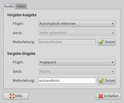
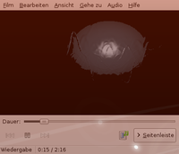

Gstreamer-0.10
Dieser Artikel wurde für die folgenden Ubuntu-Versionen getestet:
Ubuntu 16.04 Xenial Xerus
Ubuntu 14.04 Trusty Tahr
Zum Verständnis dieses Artikels sind folgende Seiten hilfreich:
 GStreamer ist ein Multimedia-Framework, welches das Abspielen, Kodieren, Dekodieren etc. von Audio- und Videodateien ermöglicht. Dieser Artikel widmet sich ausschließlich der älteren Version 0.10, während neuere Ubuntu-Versionen den Nachfolger GStreamer-1.0 nutzen.
GStreamer ist ein Multimedia-Framework, welches das Abspielen, Kodieren, Dekodieren etc. von Audio- und Videodateien ermöglicht. Dieser Artikel widmet sich ausschließlich der älteren Version 0.10, während neuere Ubuntu-Versionen den Nachfolger GStreamer-1.0 nutzen.
Installation¶
GStreamer-0.10 war bis einschließlich Ubuntu 12.10 in der Standardinstallation von Ubuntu enthalten, kann aber bis einschließlich Ubuntu 16.04 über das folgende Paket installiert [1] werden:
libgstreamer0.10-0
 mit apturl
mit apturl
Paketliste zum Kopieren:
sudo apt-get install libgstreamer0.10-0
sudo aptitude install libgstreamer0.10-0
Empfehlenswert sind weiterhin noch die Pakete:
gstreamer0.10-tools
gnome-media (nur bis Ubuntu 14.04, enthält gstreamer-properties)
mit apturl
Paketliste zum Kopieren:
sudo apt-get install gstreamer0.10-tools gnome-media
sudo aptitude install gstreamer0.10-tools gnome-media
Um später Multimedia-Dateien abzuspielen bzw. zu kodieren, benötigt man noch ein entsprechendes Plugin, welches den konkreten Decoder/Encoder enthält. Die einzelnen GStreamer-Plugins sind im Artikel Codecs beschrieben. Codecs für GStreamer, die lizenzrechtlich geschützt sind, können u.a. im Fluendo Webstore gekauft und heruntergeladen werden.
Nutzung¶
|  |
| gstreamer-properties |
Nutzt man ein Audio- oder Videoprogramm, welches GStreamer im Hintergrund (Backend) einsetzt, so verwendet man GStreamer, ohne direkt darauf zuzugreifen. Durch den Aufruf des Hilfsprogramms gstreamer-properties [2] kann man jedoch mittels einer grafischen Benutzeroberfläche die Vorgaben für die Eingabe (Source) und Ausgabe (Sink) getrennt für Audio und Video auswählen.
Möchte man wissen, welche Module/Plugins für GStreamer installiert sind, so ruft man im Terminal [3] folgenden Befehl auf:
gst-inspect-0.10
Je nach Anzahl der installierten Erweiterungen kann die Ausgabe unter Umständen sehr lang sein. Daher bietet sich an, die Ausgabe durch grep filtern zu lassen [2], z.B.:
gst-inspect-0.10 | grep src # gibt alle installierten Sources aus gst-inspect-0.10 | grep sink # gibt alle installierten Sinks aus gst-inspect-0.10 | grep encode # gibt alle installierten Encoder aus gst-inspect-0.10 | grep decode # gibt alle installierten Decoder aus gst-inspect-0.10 | grep play # gibt alle installierten GStreamer-eigenen Player aus
Man kann GStreamer auch ohne grafische Benutzeroberflächen nutzen, also ohne die eingangs genannten Audio-/Videoplayer. Dazu dient der Befehl gst-launch-0.10, mit dem sich (fast) beliebige Weiterleitungen bauen lassen. Hier ein einfaches Beispiel: Es soll die Datei musik.ogg wiedergegeben werden, welche sich im Homeverzeichnis befindet. Das lässt sich mit folgendem Befehl realisieren:
gst-launch-0.10 filesrc location=~/musik.ogg ! vorbisdec ! alsasink
filesrc location=ist der Pfad inkl. Dateinamevorbisdecist der zu benutzende Decoderalsasinkdie Ausgabe
Das Ausrufezeichen ! signalisiert GStreamer, dass als nächstes ein neues Element der Pipeline definiert wird. Kennt man den Codec der abzuspielenden Datei nicht (z.B. bei Videos), so kann man als Dekoder auch decodebin2 einsetzen. Dann versucht GStreamer, anhand des Dateiheaders den Codec zu "erraten" und benutzt - sofern installiert - den passenden Decoder.
Geht es um das reine Abspielen von Audio- bzw. Videodateien, so kann man auch folgenden Befehl nutzen:
gst-launch-0.10 playbin uri=file:///pfad/zur/datei/music.ogg
Wichtig ist dabei, dass immer der volle Pfad angegeben wird (auch, wenn man sich im Verzeichnis mit der Datei befinden sollte) und die Einleitung mit uri=file://. Die angegebenen Beispiele funktionieren im Prinzip genau so mit Videodateien.
Darüber hinaus lassen sich mit dem Befehl gst-launch-0.10 noch viele andere Dinge realisieren, z.B. Videos umkodieren, Muxen/Demuxen, CDs rippen etc. Die Weiterleitungen können dabei (fast) beliebig komplex sein. Im Vergleich zu "vollwertigen" Audio-/Videoplayern etc. ist GStreamer an sich unkomfortabel, da gst-launch z.B. keine Parameter/Optionen für die Decoder/Encoder kennt. Allerdings sind die bei GStreamer mitgelieferten Werkzeuge auch eher zum Testen bzw. schnellen Abspielen auf der Kommandozeile gedacht als in "Konkurrenz" zu den "vollwertigen" Playern zu stehen. Außerdem kann gst-launch gut in der Shell oder entsprechenden Skripten eingesetzt werden.
Zwei praktische Beispiele (eine Befehlszeile; der Übersichtlichkeit wegen umgebrochen):
FLAC in MP3 umwandeln (es werden alle .flac-Dateien des aktuellen Ordners in das MP3-Format umgewandelt):
for i in *.flac; do gst-launch-0.10 filesrc location="$i" ! \\ flacdec ! \\ audioconvert ! \\ audio/x-raw-int,rate=44100,channels=2 ! \\ lame name=enc mode=0 quality=0 vbr=4 preset=1002 ! \\ xingmux ! \\ id3v2mux ! \\ filesink location="`basename "$i" .flac`.mp3"; done
OGG in MP3 umwandeln: Da eine Umwandlung durch den auftretenden Generationsverlust problematisch ist, sollte das Ausgangsmaterial eine möglichst hohe Bitrate aufweisen. Es werden alle .ogg-Dateien des aktuellen Ordners in das MP3-Format umgewandelt:
for i in *.ogg; do gst-launch-0.10 filesrc location="$i" ! \\ oggdec ! \\ audioconvert ! \\ audio/x-raw-int,rate=44100,channels=2 ! \\ lame name=enc mode=0 quality=0 vbr=4 preset=1002 ! \\ xingmux ! \\ id3v2mux ! \\ filesink location="`basename "$i" .ogg`.mp3"; done
Weitere Beispiele bietet die Manpage zu gst-launch-0.10.

Compiz¶
Wenn man möchte, dass das Video auch dann angezeigt wird, wenn es zum Beispiel von Compiz umgeleitet wird, muss man den gconf-editor (unter Unity stattdessen dconf-editor) starten und den Schlüssel "/system/gstreamer/0.10/default/videosink" in "ximagesink" ändern. Dann werden Videos, die von Totem oder anderen Playern, die GStreamer benutzen umgeleitet, sodass man sie auch sehen kann, wenn das Fenster manipuliert wird.
Pipelines¶
Eine Gstreamer-Pipeline besteht aus mehreren hintereinander geschalteten Elementen. Ein Signal einer Anwendung durchläuft diese und wird an den gewünschten Empfänger (z.B. die Soundkarte) übermittelt. Die Anwendungsmöglichkeiten sind flexibel. Eine Übersicht bietet die ausführliche Dokumentation des Frameworks.
Beispiele¶
Im folgenden Abschnitt werden einige Beispiele für GStreamer-Pipelines vorgestellt (jeweils ohne Ein- und Ausgabe).
MP3s mit einer festen Bitrate (CBR) von 192 kbps erstellen:
audio/x-raw-int,rate=44100,channels=2 ! lame name=enc mode=1 quality=2 vbr=0 bitrate=192 ! xingmux ! id3v2mux
MP3s mit einer variablen Bitrate (VBR) von ~190 kbps erstellen:
audio/x-raw-int,rate=44100,channels=2 ! lame name=enc mode=1 quality=2 vbr=4 vbr-quality=2 ! xingmux ! id3v2mux
In der Diskussion zum Fehlerbericht 195483 findet sich folgende alternative Variante (Hintergrund sind Probleme mit der Bibliothek liblame):
audio/x-raw-int,rate=44100,channels=2 ! lamemp3enc name=enc target=0 quality=2 ! xingmux ! id3v2mux
| Optionen für MP3-Dateien | |
| Option | Beschreibung |
audio/x-raw-int | Audiodatei (nicht verändern) |
rate=44100,channels=2 | Sample-Rate der Audiodatei mit 44100kHz, Stereo (nicht verändern) |
! lame name=enc | Verwendet den MP3 Codec (siehe LAME) |
mode= | Encoder Modus (0: Stereo; 1: Joint Stereo; 2: Dual Channel; 3: Mono; 4: Auto) |
quality= | Qualität des verwendeten Algorithmus zum encoden ( von 0-9, wobei 0 am besten ist, 9 am schlechtesten) |
vbr= | Werte von 0 - 4, wobei 0 kein VBR heißt, 2 ein älterer Algorithmus ist, 3 VBR Average Bitrate und 4 der neue/schnelle LAME VBR-Modus (empfohlen) |
vbr-quality= | VBR-Bitrate. 0 ist am höchsten (245-285 kbps), 9 am niedrigsten (45-85 kbps). Empfohlen wird 2 (170 - 210 kbps) |
preset= {1001, 1002, 1003, 1006} | LAME-Presets: 1001 = Standardeinstellung - entspricht vbr-quality=2, 1002 entspricht vbr-quality=0, 1003 entspricht 320KB-CBR, 1006 entspricht vbr-quality=4 |
bitrate= | Bitrate (nur nötig, falls vbr=0). Empfohlener Wert: 192 |
! xingmux | Diese Option sollte nicht verändert werden, damit die korrekten Informationen zur variablen Bitrate und Titellänge in die MP3-Datei geschrieben werden. |
! id3v2mux | Zum Schreiben von ID3v2.4 Tags (nicht verändern) |
Links¶
Dokumentation
 - offizielle GStreamer-Dokumentation
- offizielle GStreamer-Dokumentationgst-launch-0.10
- ManpageGstreamer cheat sheet
- Videobearbeitung mit GStreamerGStreamer Audio Applications
 - Präsentation von Stefan Kost, 05/2010
- Präsentation von Stefan Kost, 05/2010Flumotion
- Streamingserver auf Basis von GStreamerGStreamer - Hauptartikel
- Erstellt mit Inyoka
-
 2004 – 2017 ubuntuusers.de • Einige Rechte vorbehalten
2004 – 2017 ubuntuusers.de • Einige Rechte vorbehalten
Lizenz • Kontakt • Datenschutz • Impressum • Serverstatus -
Serverhousing gespendet von